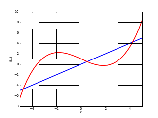
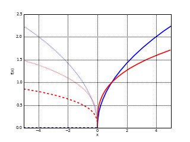
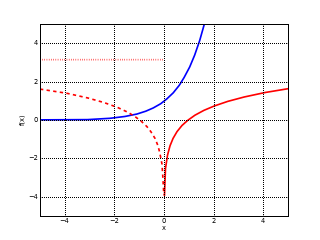
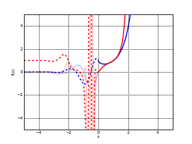

cubic, 0.1 x3 - x + 1
Generated with mpmath and matplotlib by this script.
The complex plots show the magnitude as brightness (0 = black, ∞ = white) and the phase as hue (positive real = red, imaginary = lime, negative real = cyan, negative imaginary = violet).
|  | | |
| Linear function f(x) = x, cubic, 0.1 x3 - x + 1 | Complex linear function f(x) = x | Complex cubic, 0.1 x3 - x + 1 |
 |  |  |
| Inverse 1/x, rational function (x+4)/(x5-3ix3+2) | Complex inverse 1/x | Complex rational function (x+4)/(x5-3ix3+2) |
 |  |  |
| Absolute value |x|, floor function ⌊x⌋ | Complex absolute value |x| | Complex floor function ⌊x⌋ |
|  |  |  |
| Square root x1/2, cube root x1/3 | Complex square root x1/2 | Complex cube root x1/3 |
|  |  |  |
| Exponential function exp(x), natural logarithm ln(x) | Complex exponential function exp(x) | Complex natural logarithm ln(x) |
|  |  |  |
| 2-tetration xx, 3-tetration x(xx) | Complex 2-tetration xx | Complex 3-tetration x(xx) |
 |  |  |
| W0(x) (branch 0), W−1(x) (branch −1) | Complex W0(x) (branch 0) | Complex W−1(x) (branch −1) |
 |  |  |
| Sine, cosine | Complex sine | Complex cosine |
 |  |  |
| Tangent, cotangent | Complex tangent | Complex cotangent |
 |  |  |
| Secant, cosecant | Complex secant | Complex cosecant |
 |  |  |
| Inverse sine, inverse cosine | Complex inverse sine | Complex inverse cosine |
 |  |  |
| Inverse tangent, inverse cotangent | Complex inverse tangent | Complex inverse cotangent |
 |  |  |
| Inverse secant, inverse cosecant | Complex inverse secant | Complex inverse cosecant |
 |  |  |
| Hyperbolic sine, hyperbolic cosine | Complex hyperbolic sine | Complex hyperbolic cosine |
 |  |  |
| Hyperbolic tangent, hyperbolic cotangent | Complex hyperbolic tangent | Complex hyperbolic cotangent |
 |  |  |
| Hyperbolic secant, hyperbolic cosecant | Complex hyperbolic secant | Complex hyperbolic cosecant |
 |  |  |
| Inverse hyperbolic sine, inverse hyperbolic cosine | Complex inverse hyperbolic sine | Complex inverse hyperbolic cosine |
 |  |  |
| Inverse hyperbolic tangent, inverse hyperbolic cotangent | Complex inverse hyperbolic tangent | Complex inverse hyperbolic cotangent |
 |  |  |
| Inverse hyperbolic secant, inverse hyperbolic cosecant | Complex inverse hyperbolic secant | Complex inverse hyperbolic cosecant |
 |  |  |
| Gaussian, exp(−x2), error function erf(x) | Complex Gaussian, exp(−x2) | Complex error function erf(x) |
 |  |  |
| Fresnel integral S(x), Fresnel integral C(x) | Complex Fresnel integral S(x) | Complex Fresnel integral C(x) |
 |  |  |
| Exponential integral Ei(x), Logarithmic integral li(x) | Complex exponential integral Ei(x) | Complex Logarithmic integral li(x) |
 |  |  |
| Sine integral Si(x), cosine integral Ci(x) | Complex sine integral Si(x) | Complex cosine integral Ci(x) |
 |  |  |
| Hyperbolic sine integral Shi(x), hyperbolic cosine integral Chi(x) | Complex hyperbolic sine integral Shi(x) | Complex hyperbolic cosine integral Chi(x) |
 |  |  |
| Airy function Ai(x), Airy function Bi(x) | Complex Airy function Ai(x) | Complex Airy function Bi(x) |
 |  |  |
| Bessel function J0(x), Bessel function J1(x) | Complex Bessel function J0(x) | Complex Bessel function J1(x) |
 |  |
| Gamma function Γ(x) | Complex gamma function Γ(x) |
 |  |  |
| Digamma function ψ(0)(x), trigamma function ψ(1)(x) | Complex digamma function ψ(0)(x) | Complex trigamma function ψ(1)(x) |
 |  |
| Riemann zeta function ζ(x) | Complex Riemann zeta function ζ(x) |